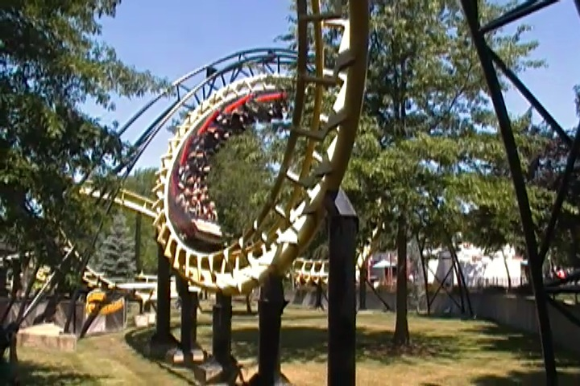
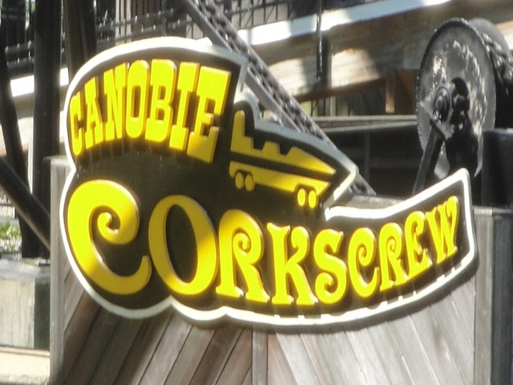

| |

Canobie Corkscrew Review

For today's review, we'll be going back in time to my visit to Canobie Lake Park to review Canobie Corkscrew. Once you got in the cars and pulled down the OTSRs, you were off. After a small dip and turn, we began to climb up the lifthill. As you climbed the lifthill, you got a lovely view of Canobie Lake and of a bunch of trees. Hey, I didn't mind. It gave the park a really nice atmosphere. But before you could say anything else, you went into the turnaround and down the drop. The drop wasn't too bad. Just a typical Arrow Drop. Then you dipped up and went through another turn. Still nothing special. Don't expect any laterals over here. Then you rolled through two corkscrews. The corkscrews were all right. I mean, they weren't any better than your typical ordinary corkscrews, but at least they didn't hurt. So consider that to be good news. We then went through a big turn and into the brake run. I'm sorry, but I find the Arrow Corkscrews to be a boring ride simply because they don't do much. Just drop, turn, corkscrews, brakes. Vekoma has a MUCH better standard corkscrew model. While I can respect the standard Arrow Corkscrew layout for being the coaster layout to have proper inversions (Not counting those death traps in the early 1900s that pulled 14 Gs). But yeah, by todays standards, it's just really boring. But hey, at least it wasn't painful like the horrible clone at Michigan's Adventure. Well, it's gone. And I'd be lying if I said that I'm sad that this ride no longer exists.
5/10
Location: Canobie Lake Park
Opened at Old Chicago in 1975
Relocated to the Alabama State Fairgrounds in 1982
Relocated to Canobie Lake Park in 1987
Died in 2021
Built by: Arrow
Last Ridden: August 1, 2011
I have ridden this exact same ride at the following parks.
Michigan's Adventure
Nagashima Spaland
Silverwood
Toshimaen
Canobie Corkscrew Photos

Home
|